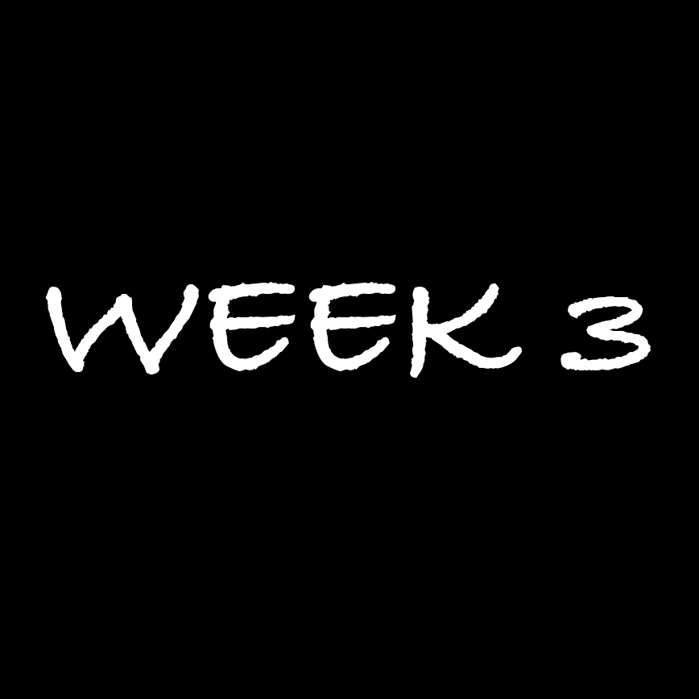
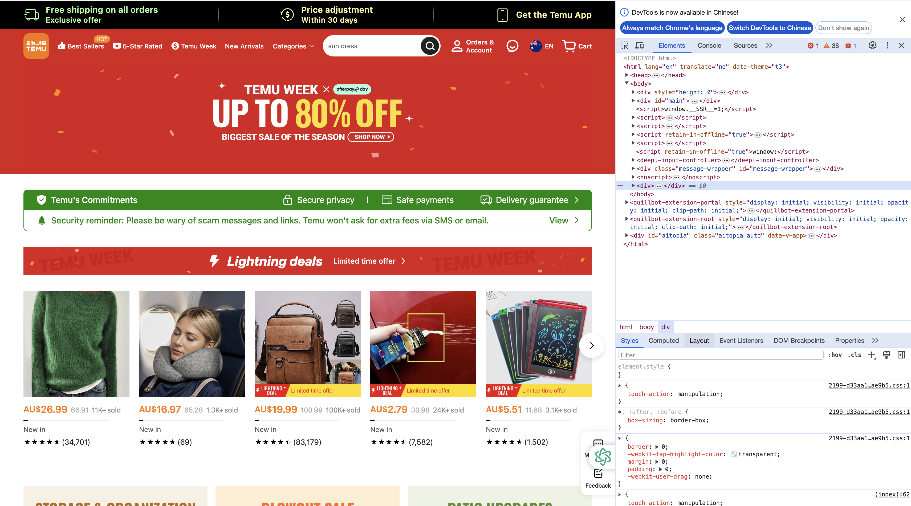
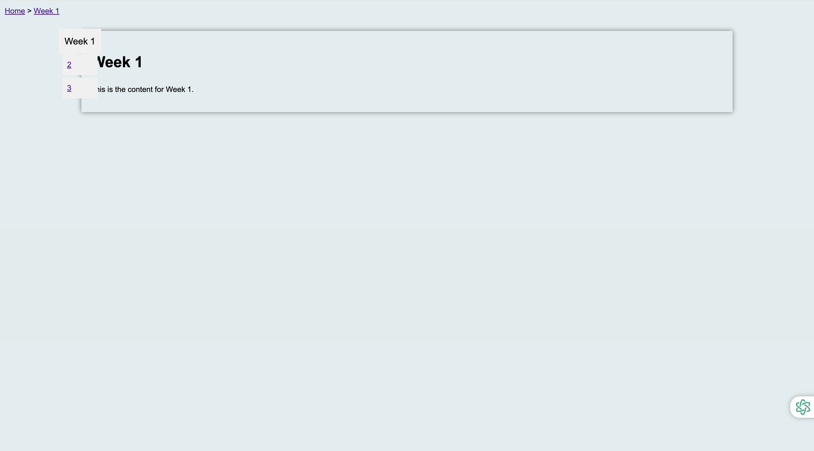

WEEK 3
Week 3 was more of a feedback on the progress of Assignment A2 so far, also talked about grids, fonts, and custom cursors etc.


I used developer tools to look at the temu site's fonts, buttons, colors, etc.
Here's what I finished in week 3, it's still quite rudimentary.
Could probably make out the bookmarks and the book, but didn't fill in any pictures or text yet .

Lastly, I made my own animated favicon for my workbook.